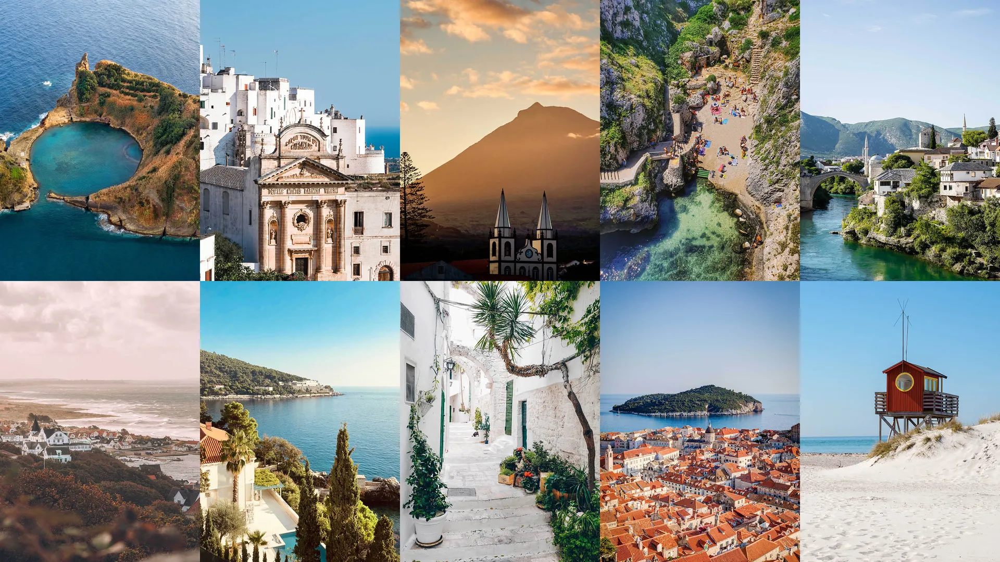
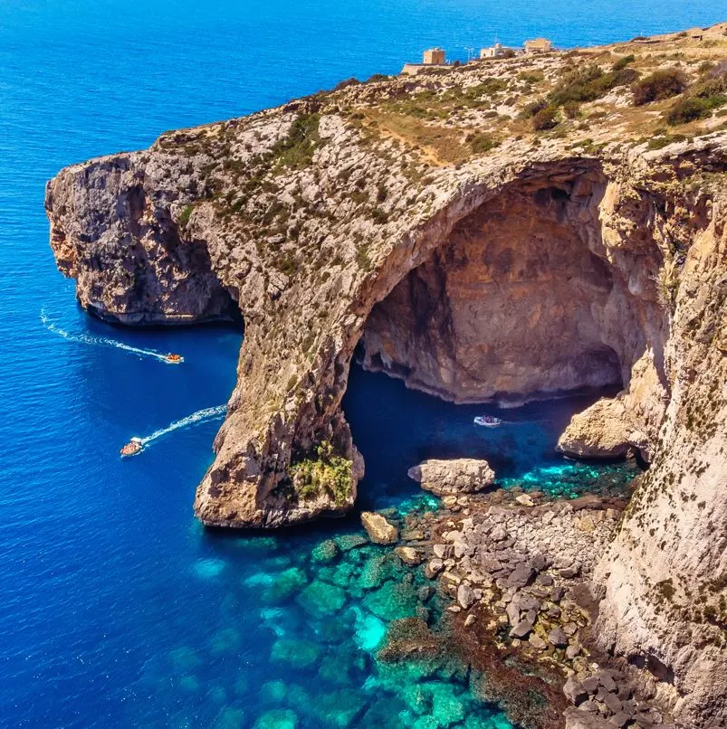
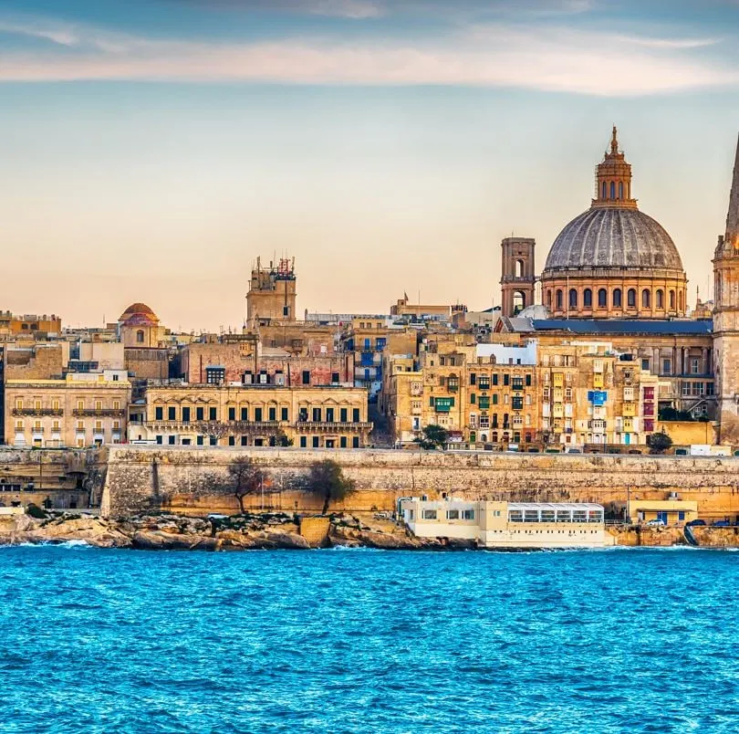
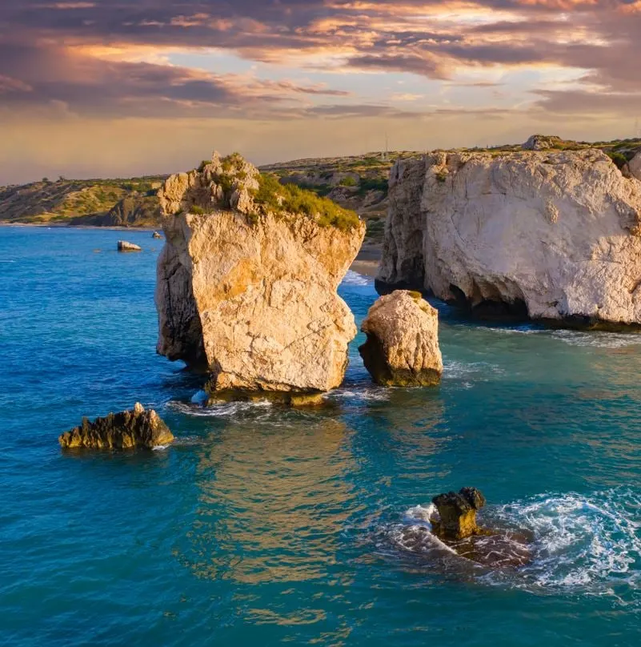
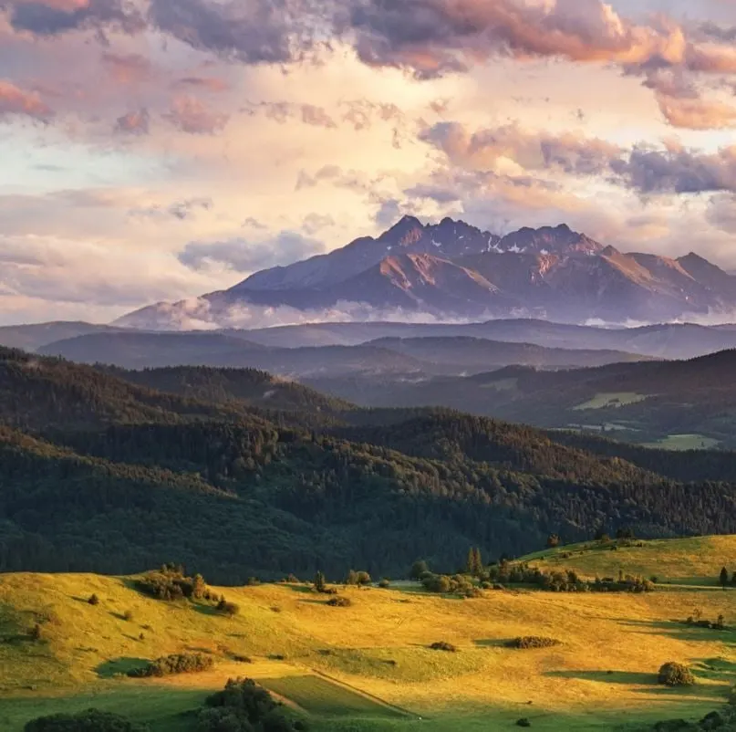
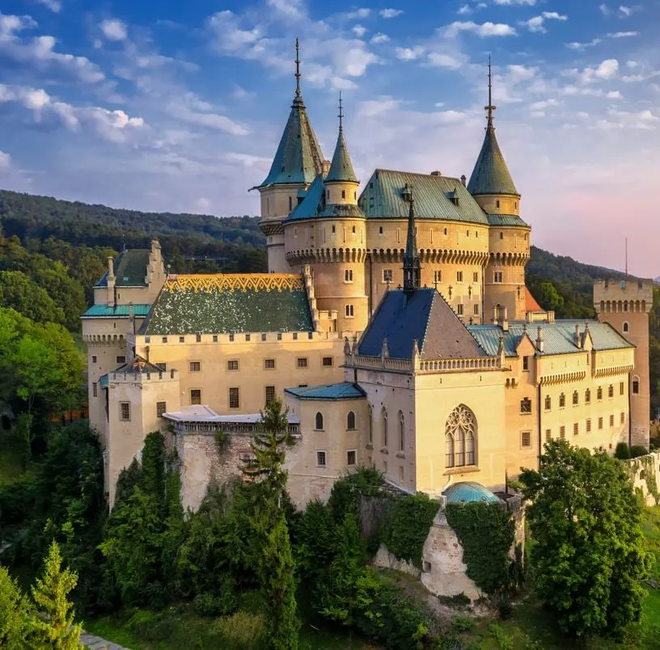

Európai időutazás: Fedezd fel a legjobb helyeket, a legjobb időpontokban!
MENÜ
Jelenleg felkapott országok

Az európai országok tele vannak pezsgő városokkal, melyek tele vannak kultúrával, valamint festői
tájakkal a francia és olasz vidékektől Görögország és Spanyolország szigeteiig.
Annak ellenére, hogy rengeteg gyönyörű hely létezik természeti csodákkal és látnivalókkal, nem
meglepő, hogy Európa helyszíneinek kiválasztása nehéz lehet. Ezért a Hovautazzak.hu minden úticél
kiemelkedő tulajdonságait, valamint felhasználói szavazatokat és szakértői véleményeket vette
figyelembe annak érdekében, hogy összegyűjtse Európa legjobb helyeit.
Használd ezt a listát az európai kiruccanásod tervezéséhez, és szavazz alább, hogy kifejezd a
véleményed a jövő évi lista kialakításában.
#1 Málta

Ez a Földközi-tenger közepén fekvő sziget három lenyűgöző dologgal várja az idelátogatókat, amelyek
miatt nem fognak el akarni menni: napfény, történelem és barátságos helyiek.
Az átlaghőmérséklet 22 Celsius-fok körül ingadozik, lehetővé téve a látogatók számára, hogy egész évben
élvezhessék a lenyűgöző strandokat.
A turisták gyakran vonzódnak a máltai partokhoz, hogy a kristálytiszta kék vizekben fürödjenek, és
fedezzék fel Európa legjobb búvárhelyeit a tenger mélyén.
De nem csak a csábító strandok és gyönyörű partvonalak jellemzik Máltát, hanem több mint 6,000 év
történelmet is rejt magában, melyek gazdag történelmét az idő szép külsőjébe fonja. Valletta, a főváros,
egy interaktív múzeumként hat.
Ez a terület annyira fontos kulturális szempontból, hogy a városa az UNESCO Világörökség része. Miután
megcsodáltad a katedrálist és a palotát a felszínen, a város alá is lemerülhetsz.

A Valletta alagutakat eredetileg védelmi stratégiaként építették, azonban az évek során fejlettebb
alagútrendszerré váltak raktározásra, hulladékkezelésre és egyebekre. Most az alagutak egy lehetőséget
kínálnak, hogy visszalépjünk a múltba, és új perspektívából lássuk a várost.
#2 Ciprus
Ciprus egy másik sziget a Földközi-tenger ölelésében, egy olyan ország gyöngyszeme, amit a látogatók
egyszerűen nem tudnak megunni.
Törökország, Szíria és Libanon közelében található, és ezekből a szomszédos kultúrákból merít,
létrehozva egy olyan kultúrát és konyhát, amely egyedi, ugyanakkor ismerős.

Ismeretes a Földközi-tenger ékkövéként, ez az ország nyugodt strandokat és buja fenyőerdőket kínál
azoknak a látogatóknak, akik a szárazföldet vagy a tengert részesítik előnyben. Mivel a sziget
viszonylag kicsi, könnyen bejárható autóval az egész terület. Felkeresheted a kevésbé látogatott Ciprus
északi részét is.
A helyiek híresek az egész évben tartó ünnepléseikről. Valójában az év során mintegy 40 fesztivált
ünnepelnek. Néhány népszerű esemény közé tartozik a diófesztivál, az Agri Ciprus vásár, a Cyprus Rall,
és a Memetçik szőlőünnep. Azonban az egyik legnagyobb fesztivál a Limasszoli Borfesztivál.
#3 Szlovákia

Magyarország, Ukrajna, Lengyelország, Ausztria és Csehország közepén található a szlovákiai szerény
ország.
Bár ez a szárazföldi ország nem kínál olyan strandokat, mint Málta és Ciprus, más egyedi látnivalókat
kínál.
Ha elutazol ebbe az európai országba, kétségtelenül találkozni fogsz lenyűgöző kastélyokkal, virágzó
természettel és gazdag kultúrával.

A 9. századtól egészen a 19. századig Szlovákiát számos támadás érte, és sok kastélyt leromboltak.
Azonban néhány régi épület nem maradt romokban, és ma is büszkén állnak, hogy a látogatók
megcsodálhassák az erejüket és szépségüket.
A látszólag áthatolhatatlan kastélyokon túl Szlovákiának van egy puha oldala is, ami a buja zöld hegyek
széles táját jelenti. Azoknak, akik szeretnek a természetben barangolni, számos túraútvonalat kínál
tapasztalt és kezdő túrázók számára egyaránt.